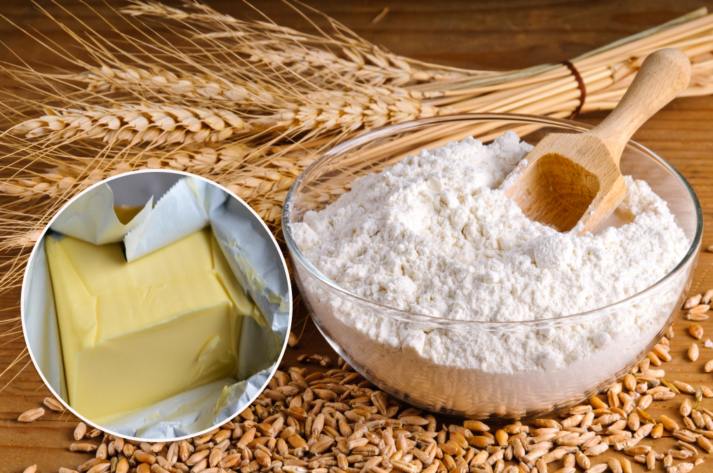

Новогодние рецепты для каждого


1.Цукаты измельчить в блендере или очень мелко нарезать их с помощью ножа. Тем же способом измельчить орехи в мелкую крошку.
2 Муку перемешать с солью и разрыхлителем. Сахар и 80 граммов предварительно размягченного сливочного масла растереть, затем взбить миксером. .

3.Когда масляно-сахарная смесь посветлеет, не прекращая взбивать, вбить яйца. Влить молоко, добавить цукаты и орехи, все перемешать
4.Всыпать муку с разрыхлителем и солью, вымешать тесто.
5.Дно и бока формы для выпекания смазать оставшимся сливочным маслом, выложить тесто и разровнять.
6.Заранее хорошо разогреть духовку, поставив температуру на 180 градусов. Выпекать рождествеснкий пирог около 35-40 минут. Готовый десерт посыпать сахарной пудрой.
Создатель: Несолёная Полина Сергеевна
Все авторские права защищены
Новогодние рецепты от нашего талантливого сообщества
Возможно размещение рекламы
этот шедевр был сотворён руками Несолёной Полины в студии Iteen Academy